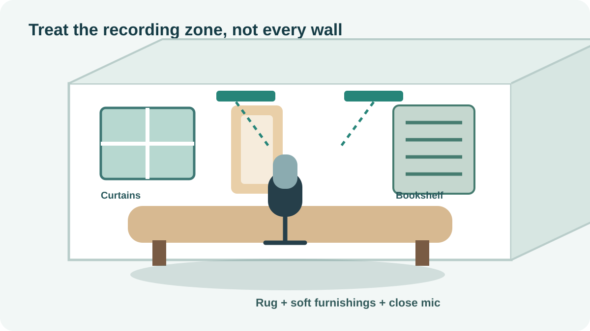
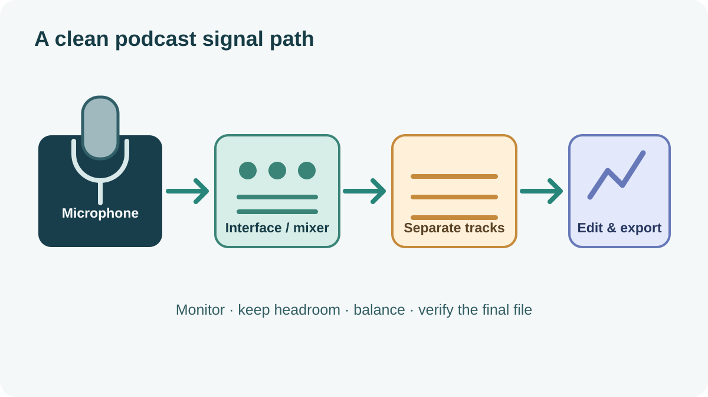

The order matters: reduce avoidable noise first, improve the recording position second, then use editing to polish—not to rescue—an unusable recording. Start with a test recording before buying panels or upgrading equipment.
1. Acoustic treatment vs. soundproofing: know the difference
Acoustic treatment controls reflections inside the room. Absorptive materials reduce flutter echo and reverberation, helping speech sound less hollow. Soundproofing aims to reduce sound passing between spaces. It usually involves construction measures such as added mass, airtight seals and carefully designed doors, windows or wall assemblies.
Foam panels attached to a wall do not soundproof a room. They may reduce some high-frequency reflections, but thin decorative foam is not a complete solution for low-mid frequencies, traffic or neighbours. In a rented or everyday room, focus on the recording zone and choose a quiet time rather than expecting inexpensive foam to block outside noise.
2. Practical DIY room improvements that actually help
You do not need to cover every wall. Improve the surfaces closest to the speaker and microphone, and listen for the difference after each change.
- Choose a furnished room: A room with curtains, a sofa, bookshelves and soft furnishings is often less reflective than an empty room with bare walls and a tiled floor.
- Cover the floor: A thick rug under the table and chairs can reduce reflections from a hard floor. It will not replace proper wall or ceiling treatment.
- Soften windows: Heavy curtains can reduce some reflections from glass. They are not a substitute for acoustic glazing or sound isolation against street noise.
- Use suitable absorbers: Place properly made, sufficiently thick acoustic panels at first-reflection areas around the recording position. Secure panels safely and follow manufacturer guidance; do not use exposed fibrous insulation as a DIY wall decoration.
- Reduce desk reflections: Avoid placing the microphone right beside a bare wall or hard reflective surface. A desk mat and thoughtful mic position can help with close reflections.
- Control the noise floor: Silence phones and notifications, close doors, move noisy computers away from microphones and record when traffic or activity is low.
- Manage ventilation safely: If a fan or air conditioner is audible, cool the room before recording and pause it only when the room remains comfortable and safe. Never compromise ventilation or safe working conditions for a take.

Find the best position before installing anything
Record the same sentence from two or three positions in the room. Listen on headphones for the clearest voice and least obvious echo. Avoid putting the speaker directly in a corner or placing the microphone close to a bare wall. Small position changes can make a noticeable difference.
3. Choose the right microphone for an untreated space
A close-positioned directional microphone is often a practical choice in an ordinary room because it captures more direct voice relative to distant room sound. Dynamic microphones are popular for spoken-word recording, but “dynamic” does not automatically mean “rejects echo.” Polar pattern, distance, room acoustics, microphone sensitivity and gain all matter. A condenser can also sound excellent when the room is quiet and the mic is placed well.
| Consideration | Dynamic microphone | Condenser microphone |
|---|---|---|
| Typical use | Close-miked speech, podcast desks, live environments | Detailed voice capture in quiet rooms and treated spaces |
| Room sound | Can work well when used close; still captures reflections within its pickup pattern | Can capture subtle room detail; placement and pattern remain important |
| Examples | RØDE PodMic, Shure MV7X, Audio-Technica AT2040 | Audio-Technica AT2020, RØDE NT1 |
| What to check | Output level, preamp gain, plosive control and stand handling noise | Room noise, sensitivity, polar pattern and phantom-power requirements |
Choose based on the room and the full signal chain—not brand popularity alone. If a microphone needs more clean gain than your interface can provide, check the interface’s preamp specifications before purchasing.
4. Mic placement and gain staging habits
Keep a consistent working distance
As a practical starting point, position a close-talk podcast microphone around 4–6 inches (10–15 cm) from the mouth, then adjust by ear and by the microphone manufacturer’s guidance. Some microphones sound more natural a little farther away. Keep the distance consistent throughout the conversation.
Angle the microphone slightly off-axis—often around 20–45 degrees—to reduce direct bursts of air from “P” and “B” sounds. Use a pop filter or suitable foam windscreen. Do not point the rear of a directional microphone toward a noise source without checking its actual polar-pattern diagram.
Set input gain with headroom
Ask the speaker to talk at their normal level and also deliver their loudest expected phrase. Adjust the preamp so typical speech is healthy and the loudest peaks have room to rise. A useful starting target for many digital spoken-word recordings is peaks around -12 dBFS to -6 dBFS, but the exact meter behaviour and workflow can vary. The essential rule is to avoid clipping at 0 dBFS.
- Do not turn the gain up simply to make the waveform look large.
- Do not record so quietly that the voice is buried in the equipment noise floor.
- Monitor on closed-back headphones and listen for clipping, hum, handling noise and plosives.
- Record each speaker to a separate track when possible, especially for interviews.

5. A simple post-production cleanup chain
Start with the cleanest recording you can capture. Apply processing gently and compare every change with the unprocessed voice so you do not remove natural tone.
- Remove obvious distractions: Edit long pauses, bumps and unwanted sounds. Use room tone to make edits sound natural rather than inserting abrupt digital silence.
- High-pass filter: A gentle starting point around 70–100 Hz can reduce rumble, handling noise and plosives. Adjust the cutoff to the speaker’s voice; too high a setting can make a voice thin.
- Corrective EQ: If the recording sounds boxy, test a small, narrow reduction in the low-mid area (often somewhere around 200–500 Hz). If it sounds dull, a restrained presence adjustment may help. These are listening-led examples, not fixed settings for every voice.
- Compression: A light ratio such as 2:1 or 3:1 can help control uneven speech. Set threshold, attack and release by listening; excessive compression raises room noise and makes voices sound unnatural.
- De-essing and noise reduction: Use only when needed. Strong denoising can create watery or metallic artefacts. If a noise is constant, try fixing its source or using a short, carefully adjusted process rather than maximum reduction.
- Level matching: Balance host and guest tracks so listeners do not need to keep changing the volume. Check the whole episode, not just one loud sentence.
Tools such as Audacity, DaVinci Resolve Fairlight, Adobe Audition and Premiere Pro can handle these steps. The exact controls differ, but the listening principles are the same.
6. Loudness and export: avoid treating one number as a universal rule
There is no single loudness target that applies to every podcast host, video platform and distribution format. Do not assume that a commonly repeated “-14 LUFS for YouTube” figure is an official YouTube requirement. Spotify’s published -14 LUFS guidance describes its music playback normalization; it should not automatically be treated as a mandatory podcast upload specification.
For delivery, follow the requirements of your podcast host or client. Measure integrated loudness and true peak, keep episodes in a consistent range, avoid clipping, and leave encoding headroom. If no delivery specification is supplied, agree on a sensible target for the project and check the exported file on headphones, a phone speaker and a normal playback device.
- Export a high-quality master (for example, WAV) for archiving and further editing.
- Create the delivery MP3 or other format required by your podcast host.
- For video podcasts, check dialogue level and overall mix after the final video export.
- Listen to the beginning, middle and end of the actual exported file before publishing.
7. Quick pre-recording checklist
- Choose the quietest practical room and time
- Close doors and silence notifications
- Check fan, AC and computer noise safely
- Position soft furnishings or absorbers
- Place mic close and use a pop filter
- Set gain while speaking at real volume
- Monitor with closed-back headphones
- Record separate tracks for each guest
- Capture a short room-tone sample
- Play back a test before the full session
Frequently asked questions
Can I record a good podcast with a USB microphone?
Yes. A quality USB microphone can work well for a solo host. For two or more speakers, a multi-input audio interface or podcast mixer with separate microphones and isolated tracks is often easier to manage. Some multi-USB setups can work, but device clocking, routing and software support need to be tested before a paid recording.
How do I stop two microphones from picking up each other?
Use individual directional microphones, keep each one close to its speaker, aim the microphone’s rejection area toward the other speaker where appropriate, and record separate tracks. Ask guests to lower or mute their mic when they are not speaking if the format allows. Good placement and room treatment reduce spill, but no microphone completely isolates one voice from another.
Can AI voice-isolation tools fix a noisy room?
Speech-enhancement tools can help with some steady background noise or accidental problems, but heavy processing may damage consonants and natural vocal texture. Use them as a backup, not as a replacement for quiet recording conditions and good microphone technique.
Do I need acoustic foam on every wall?
No. Begin with a test recording and treat the most problematic reflection areas around the speaker. Thin foam may reduce some high-frequency reflections but is not a complete broadband treatment or soundproofing solution.
Ready to upgrade your podcast sound?
Clean podcast audio comes from a controlled recording space, a microphone positioned for direct voice, safe recording levels and restrained editing. Build a repeatable setup and test it before every session.
Need podcast recording or production support in Amravati? Read our complete video podcast studio setup guide, explore Video & Photo Production and Video Editing, or contact Creator Support Amravati to discuss your project.